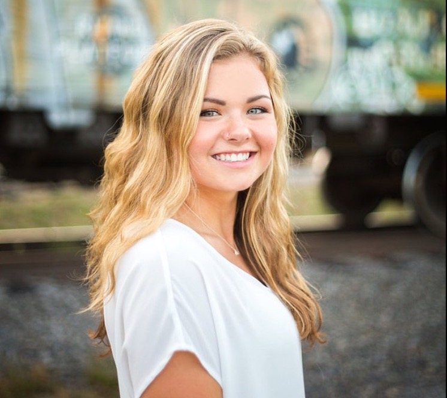
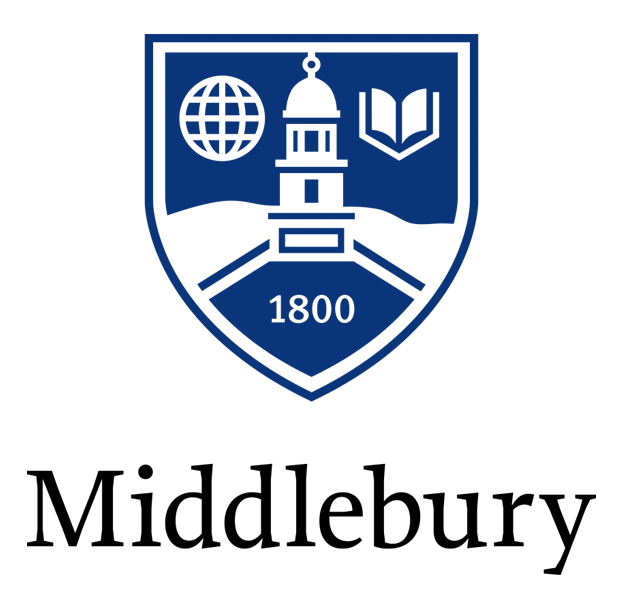
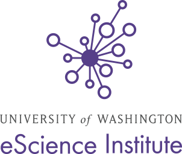
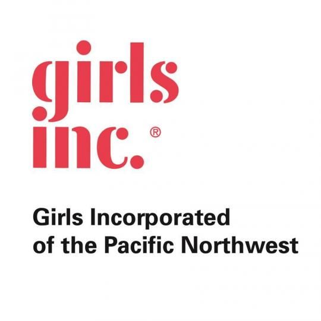
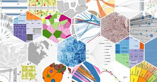
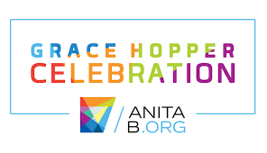
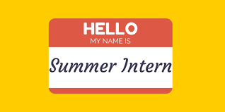
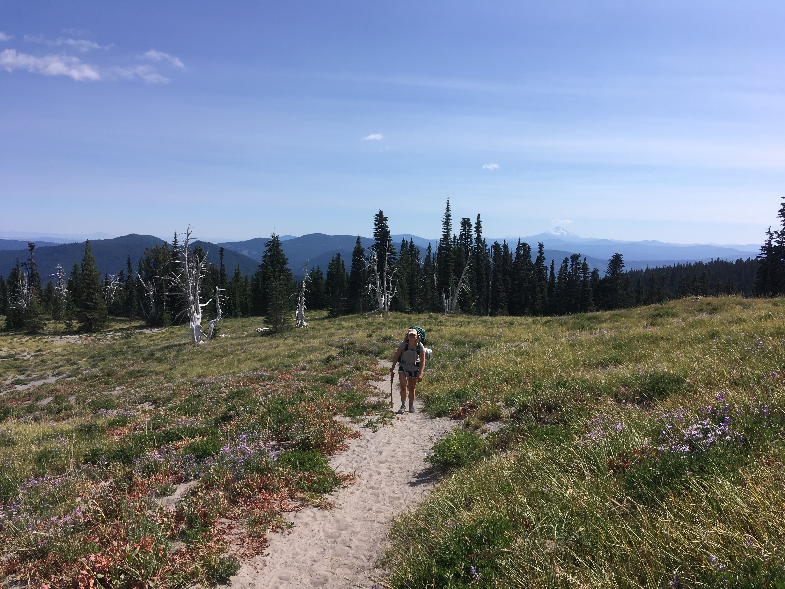

Corinne Bintz
Student at Middlebury College
About Me
Hi there! I grew up in Washington State before traveling accross the country to Vermont to study at Middlebury College. I took a gap semester
before starting college to travel and volunteer, so I am currently mid-way through my junior year at Middlebury College. I started school
in February 2017 and will graduate in February of 2021.

Academic Background
I am majoring in Computer Science and minoring in Global Health. I have also taken a variety of Economics courses. I am particularly interested in applications of data science for
social good. My coursework as a computer science major has included instruction in both computational theory and development of technical
skills. Particularly relevant coursework includes
Machine Learning, Information Visualization, Algorithms and Complexity, Economic Statistics, and Introduction to Data Science.
I also spent a semester from January to May of 2019 studying abroad in Stockholm, Sweden with
DIS. Here, I took courses in Public Health, including
Public Health and Migration, Public Health
Policy in Practice, and Epidemiology , as well as working as research assistant for a project titled HIV and Reproductive Technology Access.

Recent Work Experience
University of Washington eScience Institute Data Science for Social Good
June 2019-Present • Seattle, Washington
Data Science Student Fellow
Most recently, I worked as a student fellow with the University of Washington eScience Institute's Data Science
for Social Good Program. In partnership with the ACLU of Washington, we created an Algorithmic Equity Toolkit designed to empower community members the information regarding surveillane tehcnologies, automated decision systems,
and algorithmic bias for for more effective activism. Specifically, I contributed to an interactive demo using showcasing the harms with facial recognition software. Through building the demo, I worked heavily with Dash, Docker,
and OpenFace, an open source facial recognition tool. I also helped create our technology red flag questionairre and technology identification guide. This project gave me experience with stakeholder engagment, prototype creation,
human-centered design, and user-persona formation. Here are some featured blog posts about the program and the project I worked on:
Algorithmic Equity Kit blog post
Data Science for Social Good 2019 Projects Overview

myStrength at Livongo
May-August 2018 • Denver, Colorado
Software Engineer Intern
From May to August 2018, I worked as a Software Engineer intern at myStrength at Livongo, a digital behavioral health
company located in Denver, Colorado. For the first 5 weeks of my internship, I contributed to native cross-platform mobile development in C# using the Xamarin framework. I spent the second 5 weeks
developed features for the mobile application in a Java-based RESTful API. In this role, I Utilized MySQL to write queries and Liquibase for data migrations. Throughout the whole summer, I participated in in the Agile Development Process, working with the engineering team on two-week sprints, testing, and deployments.
Here's a link to my end-of-summer presentation:
Final Presentation
Middlebury College, Department of Computer Science
February 2018-Present • Middlebury, Vermont
Computer Science Tutor
Since Fall of 2017, I have worked as a tutor for Middlebury's Computer Science Department. I work with students during lab sections and in evening
tutor sessions, helping to explain concepts in new ways, debug code, and support problem-solving.
Middlebury College, Department of Economics
September 2017-January 2018 • Middlebury, Vermont
Research Assistant
Working as a research assistant for Professor Caitlin Knowles Myers I researched state abortion mandatory delay policies from 1980-present.
Professor Myers used this research to study the relationship access to reproductive health services and maternal and child health outcomes.
Middlebury College, Center for Teaching and Learning
September 2017-May 2018 • Middlebury, Vermont
Spanish Tutor
I tutored peers taking Spanish language courses. I helped explain concepts in different ways, share successful study tips, and recognize patterns in speaking and writing.
Girls Inc. of the Pacific Northwest
June-August 2017 • Portland, Oregon
Staff Facilitator
Girls Inc.'s Eureka! program is a five-year program that begins the summer after seventh grade and continues until the summer before senior year. The Eureka! program follows Girls Inc.'s mission to inspire all girls to be strong, smart, and bold, specifically in the STEM field. As a staff facilitator, I worked with my co-facilitator to prepare and facilitate personal development, STEM, and physical activity curricula to a group of five youth entering freshman year. Along with facilitating curriculum, I took the youth on a field trip once a week to local STEM workplaces. This involved driving a fifteen-passenger van from our location at Mt. Hood Community College to various workplaces in Portland, Oregon.

Technical Skills
A laundry list of technical skills I've developed through coursework and work experience:
Programming Languages: Java, Python, C#, MATLAB, JavaScript, R, MySQL, C, Stata
Other: Machine Learning Algorithm Implementation (Neural Networks, K-means, Multivariate Linear Regression, Logistic
Regression, SVMs), Machine Learning Frameworks (PyTorch, SciPy, NumPy, scikit-learn), D3.js, Altair, Git, pandas, Docker, Dash,
Unix Shell Scripting, Liquibase, Agile Software Development, Web scraping (Beautiful Soup, Selenium), Tableau

Soft Skills
Largely through attending a liberal arts school, I have sharpened many "soft skills." I feel confident in my ability to write, read,
and think critically, as well as convey ideas verbally and collaborate with others.
Activities and Leadership
I like to stay busy and involved outside of my coursework and employment opportunities. Here are some of my favorites
extracurricular activites and leadership inovlement: AnitaB Grace Hopper Celebration 2018 scholarship recipient and attendee, WECode 2018 attendee, Women
in Computer Science: Secretary, Middlebury Women’s Water Polo, Middlebury College Scholar, MiddVolunteers: Treasurer, MiddView
Orientation Wilderness Leader, Middlebury February Orientation Leader

Seeking...
I'm seeking an internship opportunity for Summer 2020. I'm especially interested in data science roles, but am
also excited about software engineering positions.

Personal interests
Outside of work and school, I love to spend as much time as possible outdoors hiking, biking, backpacking, running, and swimming.
I also enjoy yoga, trying new restaurants, spending time with my friends and family, and reading.

Concluding Remarks
Thanks so much for checking out my page! Please feel free to contact me at corinnebintz@gmail.com.
LinkedIn
Resume
Email